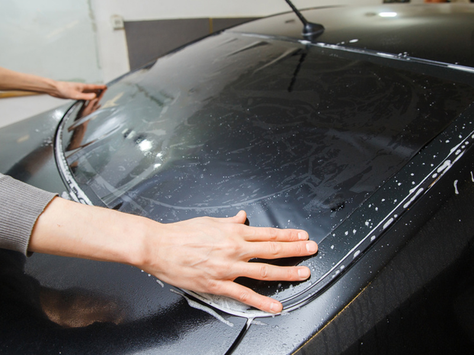

Autoglas & Scheibentönung Bad Lippspringe
Ihr zertifizierter Autoglas-Fachbetrieb in Bad Lippspringe – Steinschlagreparatur, Scheibenaustausch, Kalibrierung und Scheibentönung. Versicherungsabwicklung inklusive.
Was wir für Sie tun.
Von der schnellen Steinschlagreparatur über den fachgerechten Scheibenaustausch bis hin zur professionellen Scheibentönung – wir sind Ihr Ansprechpartner im Raum Paderborn.
Autoglas
Steinschlagreparatur, Scheibenaustausch und Kalibrierung von Fahrerassistenzsystemen. Direkte Versicherungsabrechnung möglich.
Scheibentönung
Professionelle Tönungsfolien für alle Fahrzeugtypen. 5 Helligkeitsstufen, 99% UV-Schutz, kratzfeste Beschichtung. Schnell & sauber.
Qualität, die man sieht.
Als serviceorientiertes Unternehmen begrüßen wir unsere Kunden stets offen und ehrlich. Eine umfassende Beratung sowie klare Termin- und Preiszusagen schaffen die Basis für eine erfolgreiche Zusammenarbeit.
- Persönliche und kostenlose Beratung vor der Ausführung
- Nur hochwertige Markenfolien von zertifizierten Herstellern
- 10 Jahre Garantie auf Tönungsfolien
- Saubere Arbeitsumgebung und präzise Verarbeitung
- Regelmäßige Weiterbildung auf Fachmessen und Seminaren
- Transparente Preise – kein Kleingedrucktes
Der Unterschied ist deutlich.
Ziehen Sie den Regler und erleben Sie, wie eine professionelle Scheibentönung das Fahrzeug verwandelt.


← Regler ziehen oder klicken zum Vergleichen
So einfach geht's.
Beratung
Kostenlose Beratung zu Folie, Tönung und Preis. Persönlich oder telefonisch.
Angebot
Transparentes, verbindliches Angebot ohne versteckte Kosten.
Montage
Professionelle Verarbeitung in unserem Fachbetrieb – schnell und sauber.
Übergabe
Perfektes Ergebnis mit Pflegehinweisen und 10 Jahren Garantie.
Unsere Arbeiten.


Was unsere Kunden sagen.
"Absolute Spitzenarbeit! Die Scheibentönung an meinem BMW sieht perfekt aus – kein einziges Bläschen, sauberste Kanten. Sehr schnell und fair im Preis. Klare Weiterempfehlung!"
"Ich bin aus Paderborn extra nach Bad Lippspringe gefahren – und es hat sich absolut gelohnt. Top Beratung, super Ergebnis, faire Preise. Werde auf jeden Fall wiederkommen."
"Nach dem Steinschlag wurde die Windschutzscheibe direkt bei uns vor Ort ausgetauscht – Versicherung hat alles problemlos übernommen. Sehr professionell und schnell!"
Autoglas-Schaden? Wir helfen schnell.
Kostenlose Beratung · Schnelle Terminvergabe · Versicherungsabwicklung inklusive